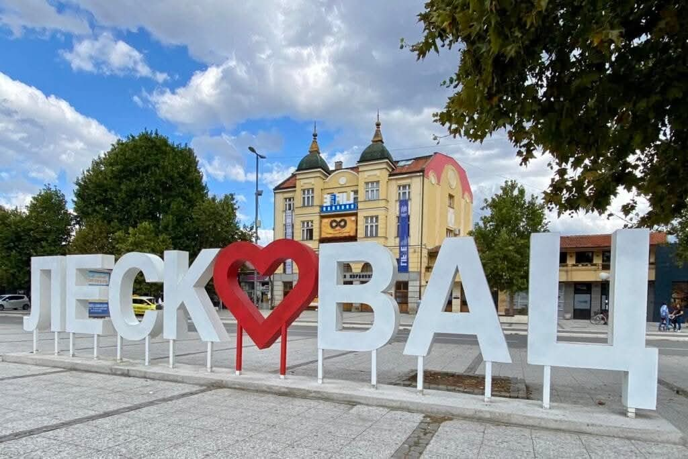

O gradu
Leskovac je jedan od većih gradova u južnoj Srbiji, poznat po svojoj gostoljubivosti, ukusnoj hrani i bogatoj kulturnoj tradiciji. Grad se nalazi u dolini reke Veternice, okružen prelepim brdima i prirodom.
Leskovac je centar istoimene opštine i poznat je kao gastronomska prestonica Srbije zahvaljujući čuvenom Leskovačkom roštilju.
Svake godine, grad organizuje Roštiljijadu, događaj koji okuplja hiljade posetilaca iz cele zemlje i regiona.
Zanimljivosti
- Poznat po festivalu „Roštiljijada“
- Brojne kulturne manifestacije tokom cele godine
- Okružen planinama i rekama